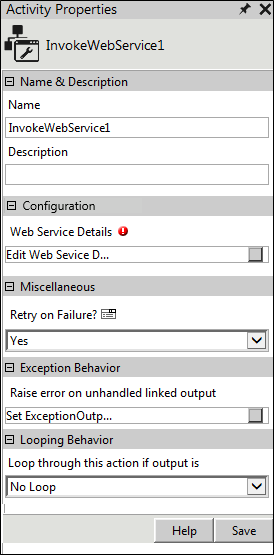
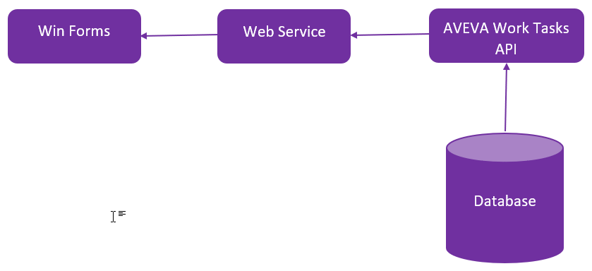
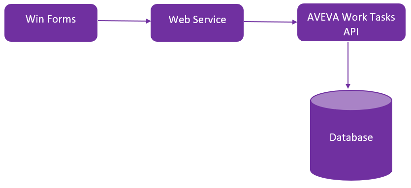

No
Activity description:
The Invoke-Web-Service Activity can be used to invoke a web service from the workflow. The output of the activity can be used to determine the path of workflow execution.
Variables for capturing exception messages
The exceptions occurring in the Invoke Web Service activity can be captured by creating a system variable of type 'string'.
The variable name should be created in the following format:
'^'+CurrentActivity.Name+'Error'
Activity Properties:
The Invoke-Web-Service activity has to be configured by specifying appropriate values for the different properties in the Activity Properties area. The Activity Properties can be accessed by clicking on the Activity Properties tool in the Tool Bar or by selecting the appropriate option from the right click menu for the Invoke-Web-Service activity. The Activity Properties are organized under the following groups of related properties. The properties under each group are described in this topic.

Name & Description
You can use these properties to specify the name and description for the activity.
Name - This property can be used to specify a name for the activity.
Property Type: Optional (This property needs to be set only if necessary.)
Description - This property specifies a brief description to be displayed for the activity.
Property Type: Optional (This property needs to be set only if necessary.)
Configuration
The property in the Configuration group has been described below. You can use this property to specify the web service details.
Web Service Details - The Web Service Details property allows the user to select a web service to invoke and specify the input and output details for it.
Property Type: Mandatory (This property must be set if the activity is to be executed.)
Steps to set the Web Service Details property
See WebService - Web Service Details for a detailed description of the Web Service Details property windows.
Miscellaneous
The property in the Miscellaneous group has been described below.
Retry on Failure? - This property allows the user to enable the activity to retry up to three times if the first attempt to connect to the web service fails. By default, it is set to Yes. This is useful to improve the chances of connecting to Webservices. This property can be set to No during development to avoid automatic retries.
Property Type: Optional (This property needs to be set only if necessary.)
Activity outputs:
The Invoke-Web-Service Activity returns the following values -
Webservice Execution Failed: Displayed when the Web service execution has failed.
In addition to this standard return value it also returns the value specified by the user in the Return Values property as output.
The Web Service block diagram is as shown below:
Getting Work Item/Task details for an actor and rendering the same in Windows Forms

Submitting an Activity/Task via the web service and alerting the engine to execute next step in the workflow

Exception Behavior
Each activity has the Raise Error on Unhandled Linked Output property on click of which, it shows all the default configured mapped error outputs in red with their check boxes selected.
Mapped Error Outputs for more details.